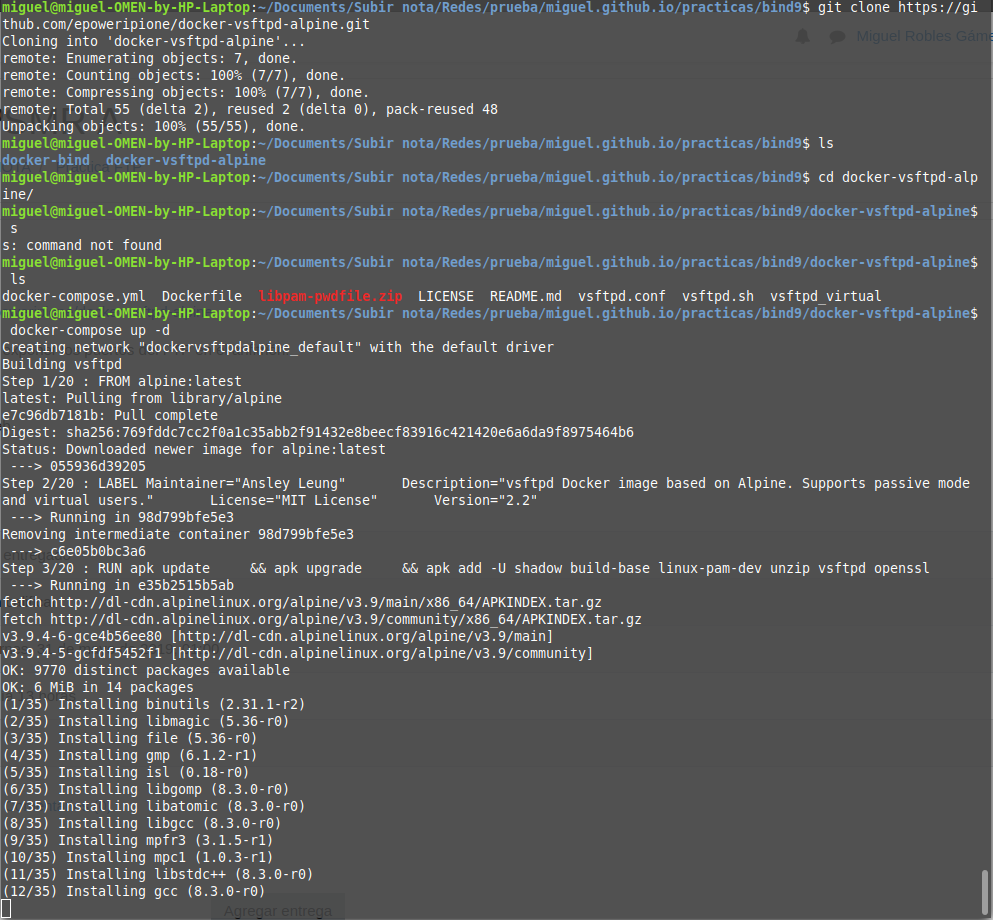
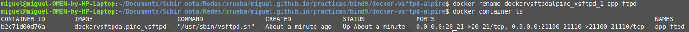
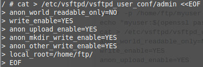
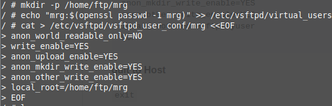
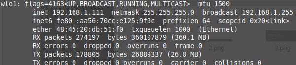
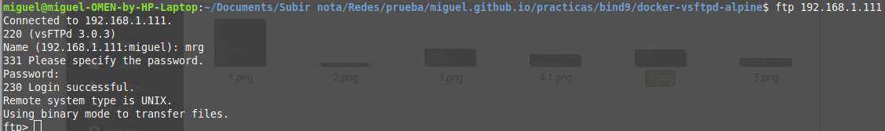
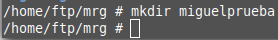
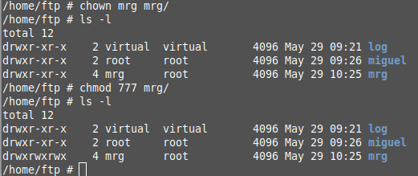
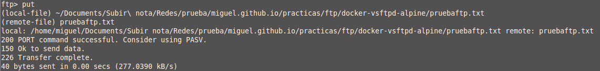
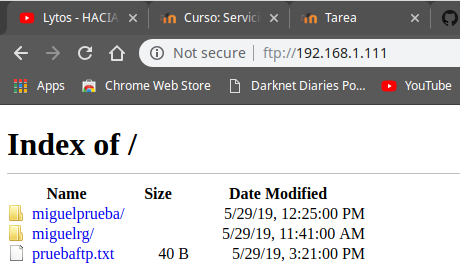

Creo el contenedor docker del repositorio que nos has dado
Le cambio el nombre al contenedor docker a app-ftpd
Con estos comandos que nos explican en el README de github cambio la contraseña de admin y creo un nuevo usuario que es mrg
Creo el usuario mrg
Esta es la IP de mi equipo host
Aqui se puede ver como puedo conectarme al servidor ftp
Aqui creo una carpeta nueva dentro de mrg
Le doy el propietario al usuario mrg de su carpeta ftp y le doy permisos para escribir
Aqui se puede ver como puedo subir archivos al servidor ftp
Aqui se puede ver el servidor
